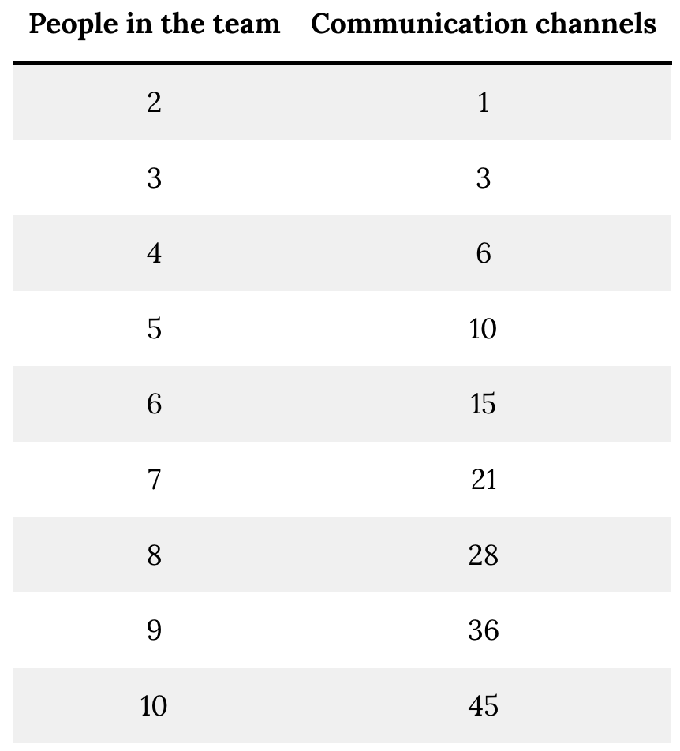
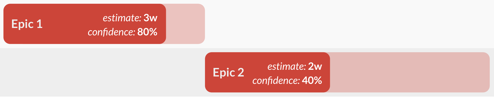
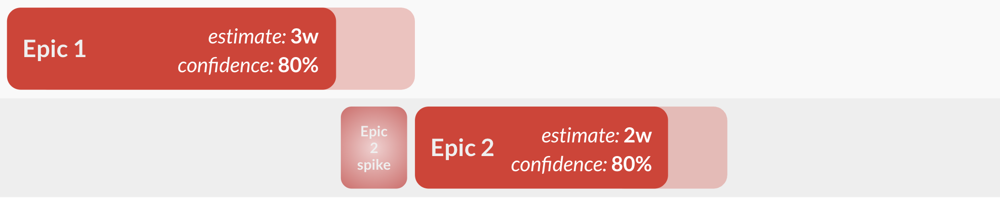
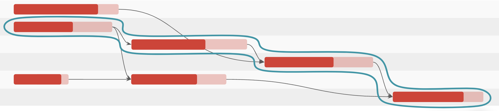
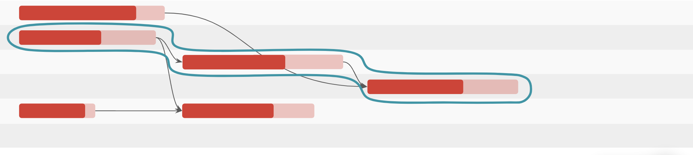
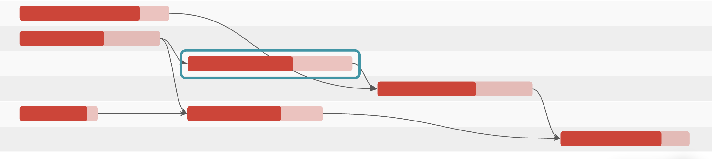
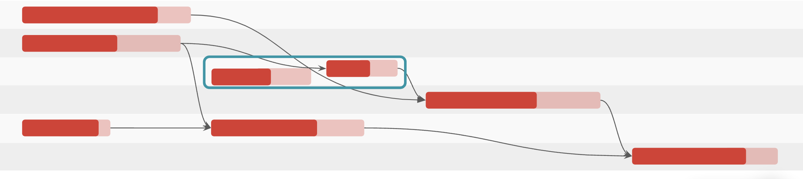
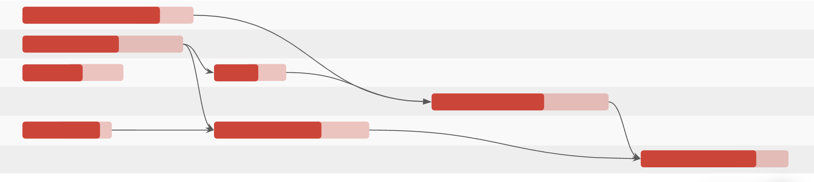
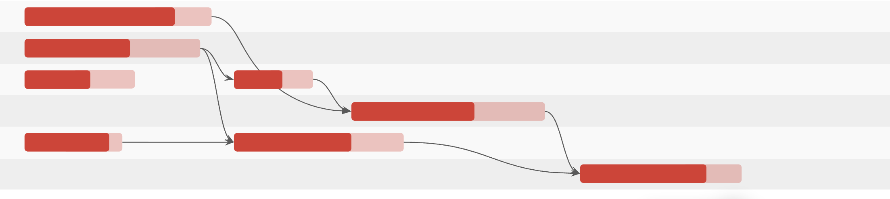

Breaking Long Poles page
Learn how to recognize which work will take the longest, and ways to break things up.
Overview
It barely needs to be said that finding ways to deliver a product faster is a key aspect of business success. There are costs associated with not having a feature customers want, an efficiency improvement that internal users need, a delay in being first to market with a disruptive offering. An obvious way to achieve a shorter cycle is to find the longest “pole” in the schedule and break it up, finding ways to deliver it quicker.
The following is the Google Slides presentation for this material:
Ways to Shorten the Long Pole
Increase resources
This option is the most obvious: if it takes a team of three developers 5 weeks to deliver a feature, shouldn’t it only take 3 weeks if you add two more developers? The improvement by adding people, however, is rarely linear in this way.
The primary reason why involves Brooks’s Law, put forth by IBM software engineer Fred Brooks in his book “The Mythical Man-Month”. Brooks states that the increase in team size leads to an exponential growth in communications channels which need to be maintained in order for the team to continue operating. Even if the technical aspects of the work can be done interchangeably by all team members (which is a very big big “if”), the n(n-1)/2 expansion of communication channels hampers the linear expectations of improved velocity.

There are also assumptions about how easy it is for new team members to onboard, learn about the work being done, and efficient adaptation to specific ways of working within the team.
Adding team members will almost always help the team’s overall velocity, especially if the technical skills of the new developers match what the team needs. But it’s important for a TPO to understand, and communicate to stakeholders, the improvement likely will not match expectations.
Technical Spikes to Improve Confidence
As we saw in the Estimating section, the log-normal distribution of a confidence factor can cause a huge blowup in delivery times. In this example, a 2-week estimate with low confidence has a longer timeline in the schedule than the high-confidence 3-week epic preceding it.

A short spike to investigate any open business or technical questions which are causing the 40% confidence in this example will shorten this total “pole” by several times the spike duration.

As a TPO, understanding why the developers are having concerns and questioning their confidence will allow you to identify what the spike should involve, what answers the team needs to complete it and how to prioritize its completion over other feature work or technical debt which could be done.
Remove Scope
If you have the right-sized team and the best confidence in your estimates, and you still have an obvious long pole, the simplest way to shorten it is to remove scope.
In this example, we have a circled long pole of functional dependency, going across multiple teams.

The last epic in this flow has dependencies on two other epics from two other teams. Can we remove it from the current scope and shorten the delivery cycle? It can always be picked up later.

The team’s ability to have this descoping discussion with stakeholders depends on a number of factors, notably time and risk sensitivity. Is a robust “what” more important to our application than an earlier “when”? Is the potential risk of an epic that relies on two other epics which come near the end of team delivery, both of which have their own dependence on an earlier epic, worth taking on?
We may also look to move requirements and/or use cases out-of-scope to shrink the size of one or more epics. In the Promotion Code example, let’s say the original requirements were to allow a promotion code to be applied to one item in the shopping cart, but not an item which is already on sale. If the decision is made to change the scope such that the code is applied to an entire order, we simplify and reduce the size of multiple epics:
Cart operation to add a promotion code (do not have to select an item in the cart)
Check with store to see if an item is listed at a sale price
Re-calculating the subtotal
Splitting Epics to Unblock and Parallelize
One of the best ways to address the long pole is to break epics up into smaller epics, and find ways to then split the work. Let’s go back to our original work plan, and pick a large epic with relatively low confidence, one that seems to be square in the middle of the key work dependencies.

In our Promotion Code example, this highlighted epic could cover:
Additional data related to a code for start & end date ranges during which the code is valid
A check in the shopping cart to see if the current date falls within that range
The TPO and the team could choose to split those two features up into their own Epic.

Now the work for the first part, the dates added as part of a promotion code, has its own estimate & confidence. This could be done in parallel with the first two epics, because it does not have dependencies on that work. The timing of delivery of the other half of the epic can also shift to the left.

The dependent epics also shift left, shortening the entire pole.

Exercise
- Try to come up with ways to shorten your initiatives timeframes